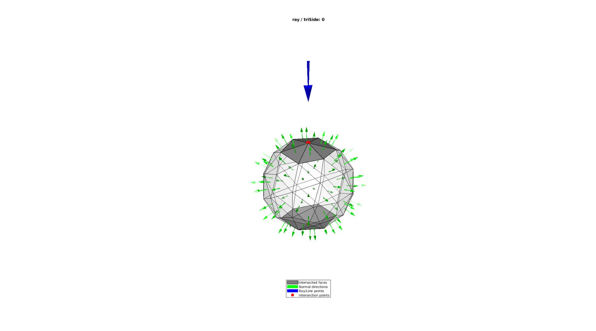
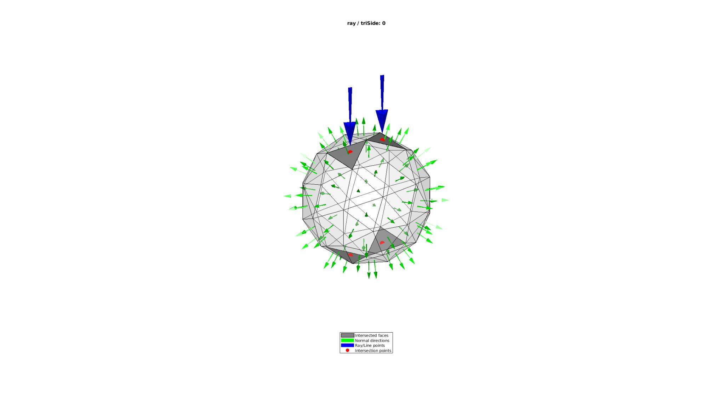
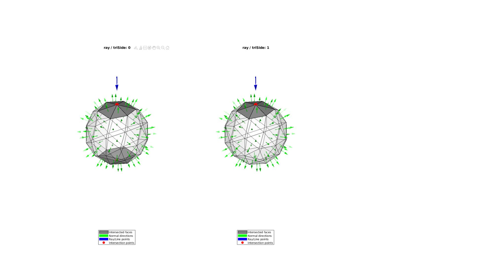
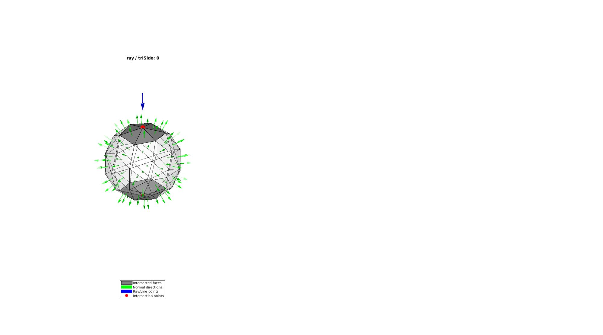
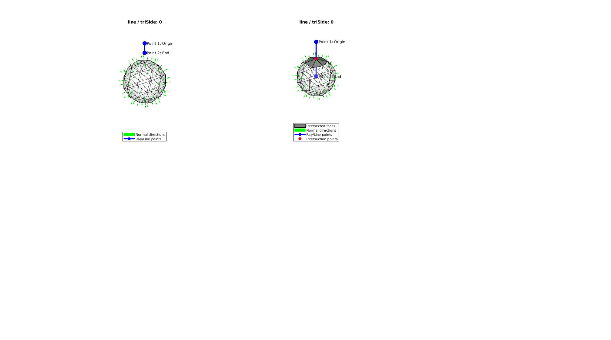
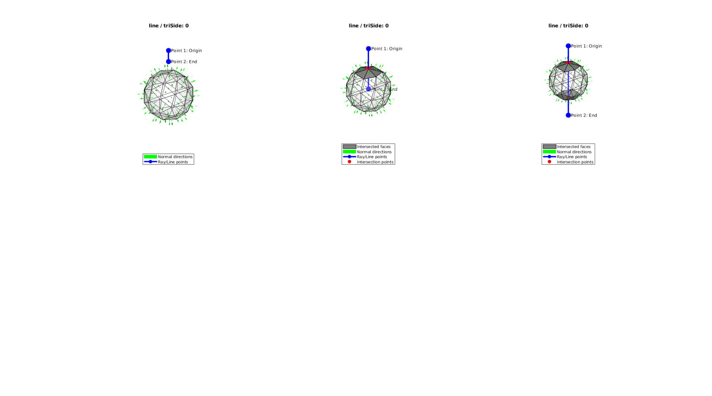
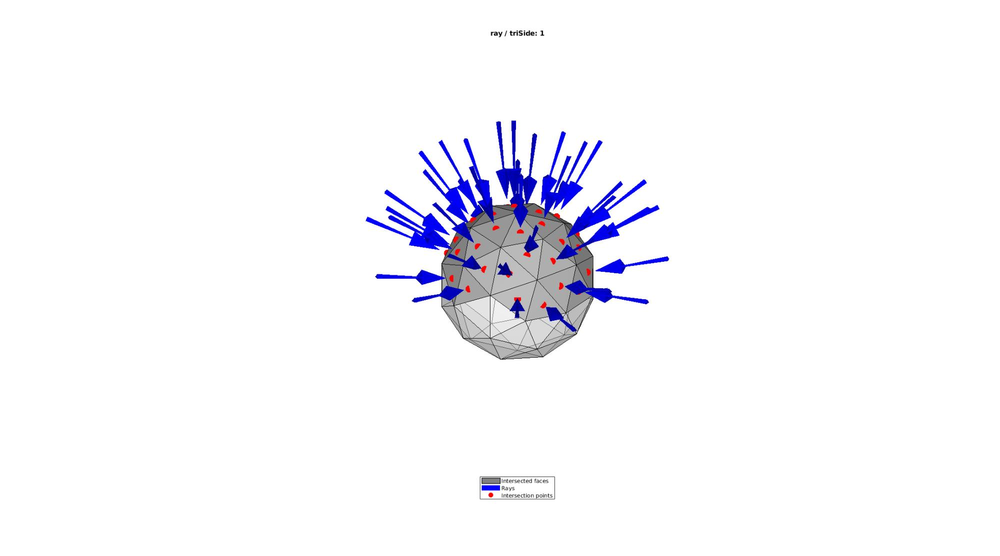
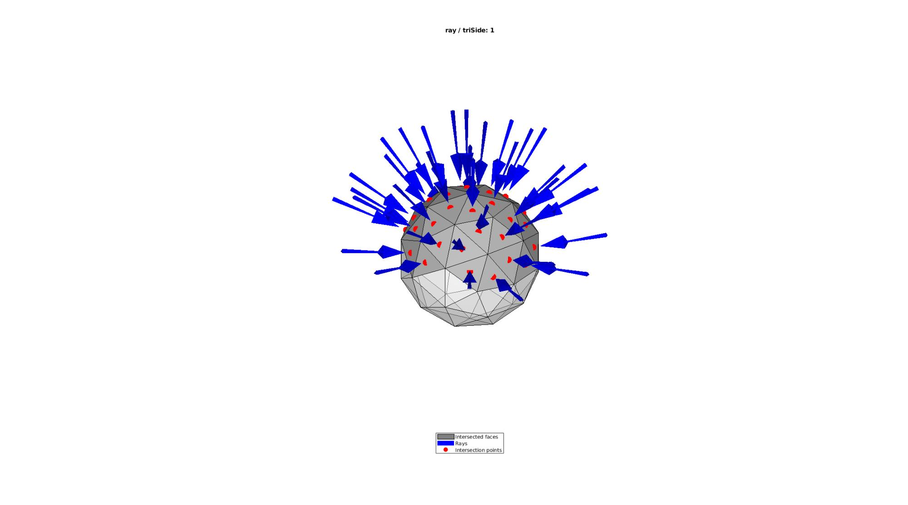

triSurfRayTrace
Below is a demonstration of the features of the triSurfRayTrace function
Contents
- Syntax
- Description
- Examples
- Example use for ray tracing a single ray or line to multiple faces
- Example use for ray tracing of multiple rays or lines to multiple faces
- Example input variations
- Example use for ray tracing of paired ray-face intersections
- Example use for ray tracing of paired line-face intersections
clear; close all; clc;
Syntax
[P,indIntersect,d,TUV]=triSurfRayTrace(P_origin,Nr,F,V,optionStruct);
Description
This function performs ray-tracings using the rays or lines defined by Nr with origin P_origin. The rays are traced to the surface defined by the faces F and the vertices V. An option structure can be added to control the tolerance level to use to consider intersections on ray/line and on triangle.
DEFAULTS: defaultOptionStruct.tolEps = 1e-5; %Tolerance level defaultOptionStruct.triSide = 0; %Triangle sides to consider defaultOptionStruct.rayType = 'ray'; %Use 'ray' type rather than 'line' defaultOptionStruct.exclusionType = 'inclusive'; %Include within tolerance defaultOptionStruct.paired=0;
The output consists of: P : An nx3 array for the intersection point coordinates indIntersect : An nx2 array with indices for rays and faces or the first/second columns respectively. d : An nx1 array with distances from the ray origin to the intersection point TUV : An nx3 array with the t-parameter, and the barycentric coordinates u and v as columns
Examples
Plot settings
markerSize=40; fontSize=10; faceAlpha=0.25;
Example triangulated surfaces
[F,V]=geoSphere(1,1);
Example use for ray tracing a single ray or line to multiple faces
This example shows non-paired analysis. This means that intersections are computed for each ray for all faces.
p_origin=[0 0 3];%Ray origin nr=[0 0 -1]; %Ray vector optionStruct.tolEps = 1e-6; optionStruct.triSide = 0; optionStruct.rayType = 'ray'; optionStruct.exclusionType = 'inclusive'; optionStruct.paired = 0; [P,indIntersect,d,TUV]=triSurfRayTrace(p_origin,nr,F,V,optionStruct);
Visualization
p_end=p_origin+nr; cFigure; hold on; title([optionStruct.rayType,' / triSide: ',num2str(optionStruct.triSide)]) gpatch(F,V,'w','k',faceAlpha); hp(1)=gpatch(F(indIntersect(:,2),:),V,'kw','k',1,1); hp(2)=patchNormPlot(F,V,[],'f','g'); hp(3)=quiverVec(p_origin,nr,[],'b'); hp(4)=plotV(P,'r.','MarkerSize',markerSize); legend(hp,{'Intersected faces','Normal directions','Ray/Line points','Intersection points'},'Location','SouthOutSide') clear hp; axisGeom(gca,fontSize); axis off; camlight headlight; drawnow;
Example use for ray tracing of multiple rays or lines to multiple faces
p_origin1=[-0.3 0 2]; p_origin2=[0.3 0 2]; nr1=[0 0 -1]; nr2=[0 0 -1]; P_origin= [p_origin1; p_origin2]; %Ray line origins Nr=[nr1; nr2]; %Ray/line vectors optionStruct.tolEps = 1e-6; optionStruct.triSide = 0; optionStruct.rayType = 'ray'; optionStruct.exclusionType = 'inclusive'; optionStruct.paired = 0; [P,indIntersect,d,TUV]=triSurfRayTrace(P_origin,Nr,F,V,optionStruct);
Visualization
cFigure; hold on; title([optionStruct.rayType,' / triSide: ',num2str(optionStruct.triSide)]) gpatch(F,V,'w','k',faceAlpha,1); hp(1)=gpatch(F(indIntersect(:,2),:),V,'kw','k',1,1); hp(2)=patchNormPlot(F,V,[],'f','g'); hp(3)=quiverVec(P_origin,Nr,[],'b'); hp(4)=plotV(P,'r.','MarkerSize',markerSize); legend(hp,{'Intersected faces','Normal directions','Ray/Line points','Intersection points'},'Location','SouthOutSide') clear hp; axisGeom(gca,fontSize); axis off; colormap(viridis(2)); caxis([0 1]); camlight headlight; drawnow;
Example input variations
This example aims to show the effect of the optional input parameters
cFigure;
for testCase=1:3
switch testCase case 1 rayType='ray'; triSide=0; p_origin=[0 0 2]; p_end=[0 0 1.5]; case 2 rayType='ray'; triSide=1; p_origin=[0 0 2]; p_end=[0 0 1.5]; case 3 rayType='ray'; triSide=-1; p_origin=[0 0 2]; p_end=[0 0 1.5]; end nr=p_end-p_origin; %Ray/line vector
optionStruct.tolEps = 1e-6;
optionStruct.triSide = triSide;
optionStruct.rayType = rayType;
optionStruct.exclusionType = 'inclusive';
optionStruct.paired = 0;
[P,indIntersect]=triSurfRayTrace(p_origin,nr,F,V,optionStruct);
subplot(1,3,testCase); hold on; title([optionStruct.rayType,' / triSide: ',num2str(optionStruct.triSide)]) gpatch(F,V,'w','k',faceAlpha,1); hp(1)=gpatch(F(indIntersect(:,2),:),V,'kw','k',1,1); hp(2)=patchNormPlot(F,V,[],'f','g'); hp(3)=quiverVec(p_origin,nr,[],'b'); hp(4)=plotV(P,'r.','MarkerSize',markerSize); legend(hp,{'Intersected faces','Normal directions','Ray/Line points','Intersection points'},'Location','SouthOutSide') clear hp; axisGeom(gca,fontSize); axis off; colormap(viridis(2)); caxis([0 1]); camlight headlight;

end
drawnow;
cFigure;
for testCase=1:5
switch testCase case 1 rayType='line'; triSide=0; p_origin=[0 0 2]; p_end=[0 0 1.5]; case 2 rayType='line'; triSide=0; p_origin=[0 0 2]; p_end=[0 0 0]; case 3 rayType='line'; triSide=0; p_origin=[0 0 2]; p_end=[0 0 -2]; case 4 rayType='line'; triSide=1; p_origin=[0 0 2]; p_end=[0 0 -2]; case 5 rayType='line'; triSide=-1; p_origin=[0 0 2]; p_end=[0 0 -2]; end nr=p_end-p_origin; %Ray/line vector
optionStruct.tolEps = 1e-6;
optionStruct.triSide = triSide;
optionStruct.rayType = rayType;
optionStruct.exclusionType = 'inclusive';
optionStruct.paired = 0;
[P,indIntersect]=triSurfRayTrace(p_origin,nr,F,V,optionStruct);
subplot(2,3,testCase); hold on; title([optionStruct.rayType,' / triSide: ',num2str(optionStruct.triSide)]) gpatch(F,V,'w','k',faceAlpha,1); if ~isempty(P) hp(1)=gpatch(F(indIntersect(:,2),:),V,'kw','k',1,1); hp(2)=patchNormPlot(F,V,[],'f','g'); hp(3)=plotV([p_origin; p_end],'b.-','MarkerSize',markerSize,'LineWidth',3); hp(4)=plotV(P,'r.','MarkerSize',markerSize); legend(hp,{'Intersected faces','Normal directions','Ray/Line points','Intersection points'},'Location','SouthOutSide') else hp(1)=patchNormPlot(F,V,[],'f','g'); hp(2)=plotV([p_origin; p_end],'b.-','MarkerSize',markerSize,'LineWidth',3); legend(hp,{'Normal directions','Ray/Line points'},'Location','SouthOutSide') end text(p_origin(1),p_origin(2),p_origin(3),' Point 1: Origin','FontSize',fontSize); text(p_end(1),p_end(2),p_end(3),' Point 2: End','FontSize',fontSize); clear hp; axisGeom(gca,fontSize); axis off; colormap(viridis(2)); caxis([0 1]); camlight headlight; 

 
 end
drawnow;
Example use for ray tracing of paired ray-face intersections
This example shows paired analysis. This means that exactly one ray is provided for each face and only intersections with these individual ray-face pairs are computed.
VF=patchCentre(F,V); indSelect=find(VF(:,3)>0); NF=patchNormal(F,V); Nr=-NF(indSelect,:); P_origin=VF(indSelect,:)+1.1*NF(indSelect,:); optionStruct.tolEps = 1e-6; optionStruct.triSide = 1; optionStruct.rayType = 'ray'; optionStruct.exclusionType = 'inclusive'; optionStruct.paired = 1; [P,indIntersect,d]=triSurfRayTrace(P_origin,Nr,F(indSelect,:),V,optionStruct); cFigure; hold on; title([optionStruct.rayType,' / triSide: ',num2str(optionStruct.triSide)]) gpatch(F,V,'w','k',0.5,1); hp(1)=gpatch(F(indSelect(indIntersect(:,2)),:),V,'kw','k',1,1); hp(2)=quiverVec(P_origin,Nr,[],'b'); hp(3)=plotV(P,'r.','MarkerSize',markerSize); legend(hp,{'Intersected faces','Rays','Intersection points'},'Location','SouthOutSide') clear hp; axisGeom(gca,fontSize); axis off; colormap(viridis(2)); caxis([0 1]); camlight headlight;
Example use for ray tracing of paired line-face intersections
This example shows paired analysis. This means that exactly one ray is provided for each face and only intersections with these individual ray-face pairs are computed.
VF=patchCentre(F,V); indSelect=find(VF(:,3)>0); NF=patchNormal(F,V); Nr=-NF(indSelect,:); P_origin=VF(indSelect,:)+0.5*NF(indSelect,:); optionStruct.tolEps = 1e-6; optionStruct.triSide = 1; optionStruct.rayType = 'line'; optionStruct.exclusionType = 'inclusive'; optionStruct.paired = 1; [P,indIntersect,d]=triSurfRayTrace(P_origin,Nr,F(indSelect,:),V,optionStruct); cFigure; hold on; title([optionStruct.rayType,' / triSide: ',num2str(optionStruct.triSide)]) gpatch(F,V,'w','k',0.5,1); hp(1)=gpatch(F(indSelect(indIntersect(:,2)),:),V,'kw','k',1,1); hp(2)=quiverVec(P_origin,Nr,[],'b'); hp(3)=plotV(P,'r.','MarkerSize',markerSize); legend(hp,{'Intersected faces','Lines','Intersection points'},'Location','SouthOutSide') clear hp; axisGeom(gca,fontSize); axis off; colormap(viridis(2)); caxis([0 1]); camlight headlight;